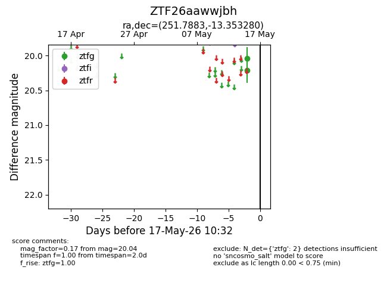
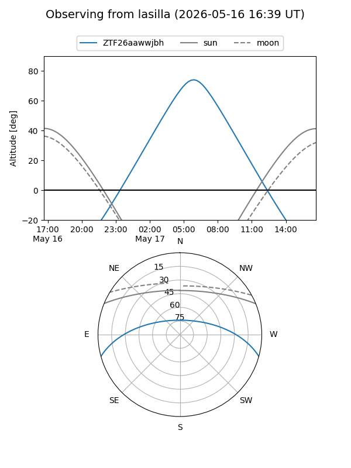
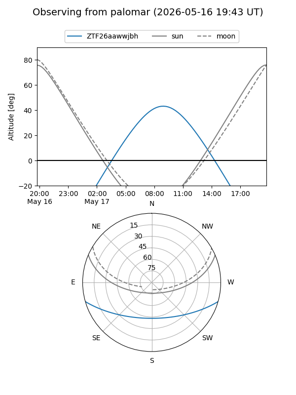

ZTF26aawwjbh
Target ZTF26aawwjbh at 2026-05-17 10:34
Aliases and brokers:
FINK: link
Lasair: link
ALeRCE: link
alt names
ZTF26aawwjbh (ztf,fink_ztf)
Coordinates:
equatorial (ra, dec) = 251.7883,-13.35328
equatorial (HMS+DMS) = 16:47:09.19,-13:21:11.81
galactic (l, b) = (5.3944,+19.97413)
Flags:
Photometry:
last ztfg=20.04
2 ztfg detections
Lightcurve

Visibility


Additional plots